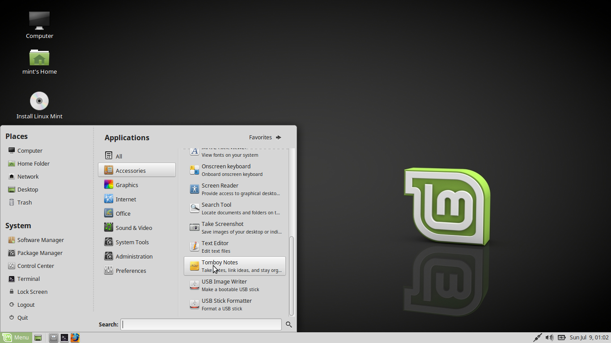
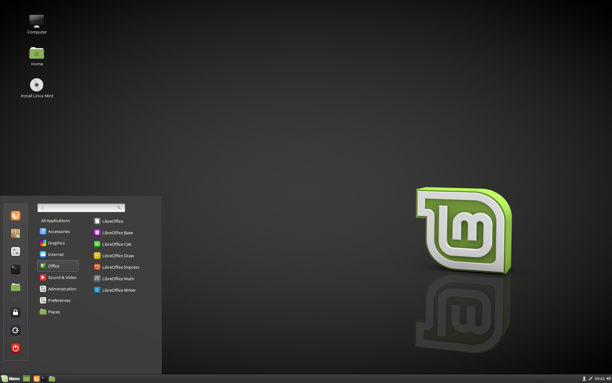
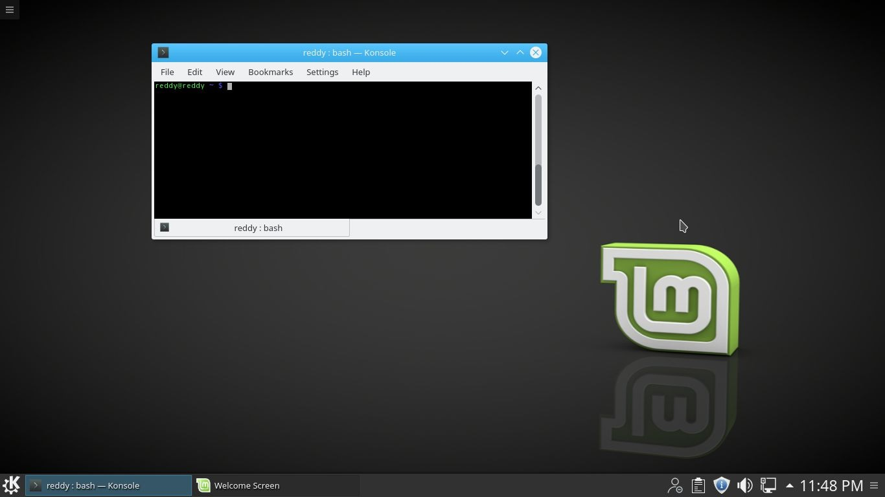
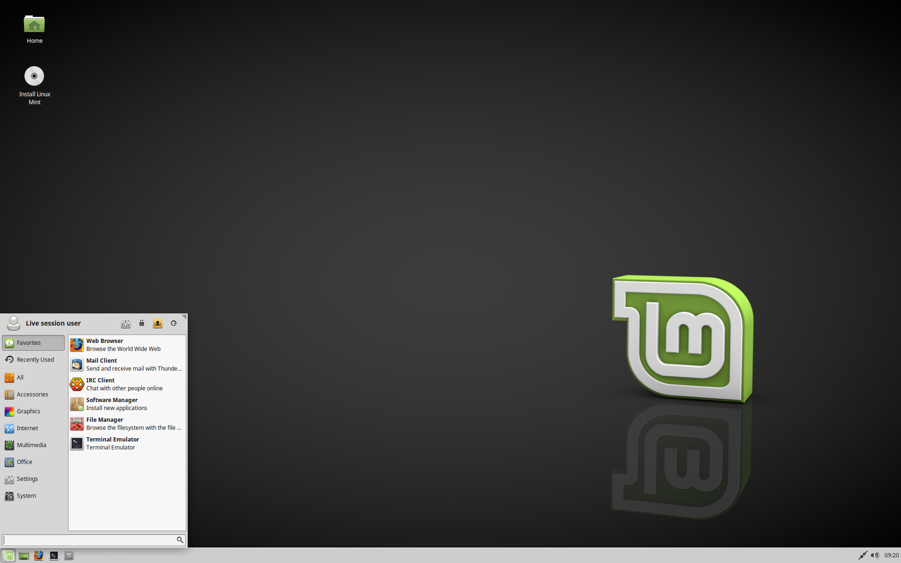

Número e Codinome das Versões do Mint
O número de versões e codinomes seguem uma lógica única no Linux Mint.
Até agora, o Linux Mint já usou os seguintes codinomes:
- 1.0 - Ada
- 2.0 - Barbara
- 2.1 - Bea
- 2.2 - Bianca
- 3.0 - Cassandra
- 3.1 - Celena
- 4.0 - Daryna
- 5 - Elyssa
- 6 - Felicia
- 7 - Gloria
- 8 - Helena
- 9 - Isadora
- 10 - Julia
- 11 - Katya
- 12 - Lisa
- 13 - Maya
- 14 - Nadia
- 15 - Olivia
- 16 - Petra
- 17 - Qiana
Edições
Uma Edição é uma versão do Linux Mint que é personalizada para atender um determinado conjunto de necessidades. Aqui estão algumas das edições mais populares:
- MATE Edition (utiliza o ambiente gráfico MATE) 
- Cinnamon Edition (utiliza o ambiente gráfico Cinnamon) 
- KDE Edition (utiliza o ambiente gráfico KDE) 
- Xfce Edition (utiliza o ambiente gráfico Xfce) 
Introdução ao Kernel Linux
A Arquitetura Fundamental do Sistema Operacional GNU/Linux

Na parte superior, temos o espaço de usuário ou do aplicativo. Este é o espaço no qual os aplicativos de usuário são executados. Abaixo do espaço de usuário está o espaço do kernel. Aqui, o kernel Linux existe.
Há também a GNU C Library (glibc). Ela fornece a interface de chamada do sistema que se conecta ao kernel e fornece o mecanismo para transição entre o aplicativo de espaço de usuário e o kernel. Isso é importante, pois o kernel e o aplicativo do usuário ocupam espaços de endereços diferentes e protegidos. E embora cada processo de espaço de usuário ocupe seu próprio espaço de endereço virtual, o kernel ocupa um único espaço de endereço. Para obter informações adicionais, consulte os links na seção Recursos.
O kernel Linux pode ainda ser dividido em três níveis completos. Na parte superior, a interface de chamada do sistema, que implementa as funções básicas, como read e write. Abaixo da interface de chamada do sistema está o código do kernel, que pode ser mais precisamente definido como o código do kernel independente da arquitetura. Esse código é comum a todas as arquiteturas do processador às quais o Linux oferece suporte. Abaixo, está o código dependente da arquitetura, que forma o que é mais comumente chamado de BSP (Board Support Package). Este código atua como o processador e o código específico da plataforma para a arquitetura em questão.
Propriedades do Kernel Linux
Ao discutir a arquitetura de um sistema amplo e complexo, é possível visualizar o sistema sob várias perspectivas. Um objetivo de uma decomposição de arquitetura é fornecer um modo de compreender melhor a origem, e é isso que faremos aqui.
O kernel Linux implementa vários atributos importantes de arquitetura. Em um nível avançado e em níveis mais baixos, o kernel é dividido em camadas em diversos subsistemas distintos. O Linux pode também ser considerado monolítico porque agrupa todos os serviços básicos dentro do kernel. Isso o diferencia da arquitetura de microkernel, na qual o kernel fornece serviços básicos, como comunicação, E/S e gerenciamento de memória e processo, e serviços mais específicos são plugados na camada do microkernel. Cada um tem suas próprias vantagens, mas vou me afastar desse debate.
Com o tempo, o kernel Linux tornou-se eficaz tanto em termos de memória quanto de uso da CPU, além de ser extremamente estável. Contudo, o aspecto mais interessante do Linux, considerando seu tamanho e sua complexidade, é sua portabilidade. Ele pode ser compilado para executar uma grande quantidade de processadores e plataformas com diferentes limitações e necessidades de arquitetura. Um exemplo é a capacidade do Linux em executar em um processo com uma Memory Management Unit (MMU), bem como em processos que não fornecem MMU. A porta uClinux do kernel Linux é fornecida para suporte a não-MMU. Consulte a seção Recursos para obter mais detalhes.
Conheça Mais Detalhes Sobre O Kernel 4.16 - Ultima Versão
Já está disponível o novo kernel 4.16. Algumas mudanças importantes foram implementadas como será mostrado ao longo deste post. Quase 1.800 desenvolvedores contribuíram para isso. Assim, são nada menos que 195.000 novas linhas de código. Assim, há uma tentativa de mover o kernel para C++. Agora, esta linguagem de programação irá usar técnicas mais modernas), o Linux 4.16 seguiu um desenvolvimento mais tradicional. Conheça mais detalhes sobre o kernel 4.16.
As principais novidades
Melhorias de segurança no kernel, em relação ao Meltdown e Spectre, especialmente contra a variante v2 deste (via Retpoline). Agora o kernel também nos avisa quando a carga do microcódigo está com defeito. Além disso, as novas correções e várias melhorias impedem a deterioração, tanto no desempenho , quanto nas medidas de proteção tomadas anteriormente;
Melhorias na área de virtualização , incluindo ajuste no kernel do VirtualBox (agora capaz de lidar com o módulo vboxguest), a possibilidade de utilizar a tecnologia Intel GVT-g e suporte KVM tecnologias de criptografia do AMD Secure Encrypted Virtualization (SVE) e também do hipervisor gratuito Jailhouse
Duas novas opções de configuração relacionadas à economia de energia: nos discos, as distros SATA podem decidir habilitar o DIPM automaticamente e uma nova configuração de suspensão automática para dispositivos Bluetooth USB, convidando-os a adormecer. Tudo isso permitirá que a bateria de muitos laptops durem mais
Melhorias nos drivers de gráficos AMDKFD HSA devem ser uma boa notícia para os fãs de mineração com criptomoedas
Nvidia, vemos que o Nouveau inclui suporte para os gráficos do GT 1030
No sistema de arquivos: destaque para um patch no subsistema MultiMediaCard. Ele influenciará positivamente o desempenho dos cartões SD, bem como melhorias no XFS
Suporte de hardware para a arquitetura ARM. Entre melhorias: Orange Pi R1, Hummingboard2, D-Link DNS-313 NAS, Actions S700 SoC
Além disso, mudanças no Libre Computer Board ALL-H3-CC H3 y Variscite DART-MX6